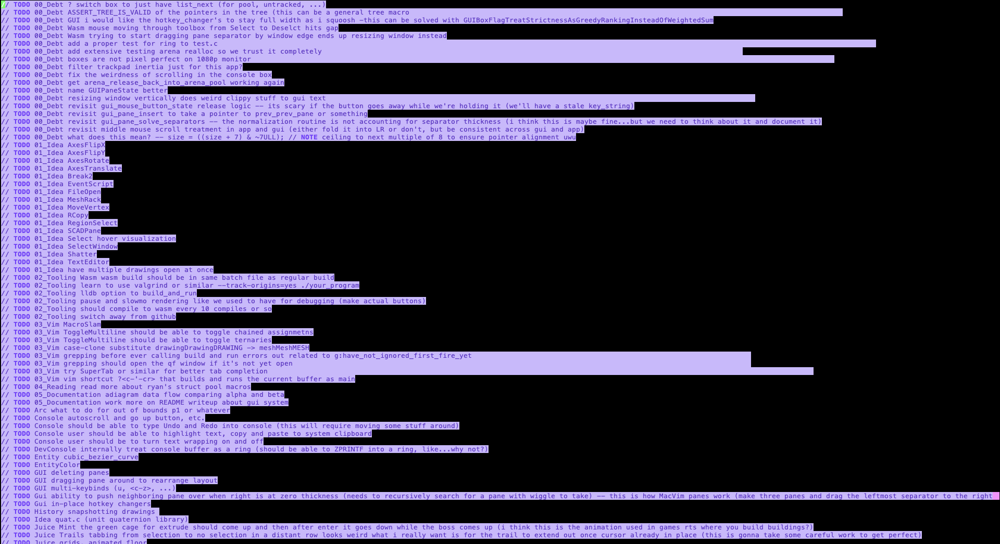

make your code base a home base
keeping track of TODO's
i've tried a lot of ways of keeping track of my TODO's and so far only one has even sort of worked
first, here's some approaches that didn't work for me
(a) scattering my TODO's throughout my codebase -- they accumulate and become meaningless and overwhelming; plus they distract from my actual explanatory comments
(b) curating my TODO's in a GitHub issues -- way too much friction for me; requires me to be connected to the internet; TODO's end up piling up D:
(c) no TODO list, just follow your heart („• ֊ •„) -- unfortunately, my heart is bad at planning projects. ( boring ideas never get done, fun / shiny ideas always get started but rarely get finished )
here's the approach that did work for me:
- i have one file called todo.x and another file called done.x
- if i have an idea for something to do, i add it to todo.x, for example...
// TODO make a less exciting test_eso (just draw the primitives)
- if i end up doing the todo, i replace its TODO with DONE and move it to done.x
aaand, that's pretty much it, just two giant lists ヽ(ヅ)ノ

oh my.
one last thing: since marking the TODO as done and moving it over by hand is frictious, i wrote a Vim mapping that marks the TODO as DONE and moves it over to done.txt also also pushes to github the body of the TODO as the commit message
noremap <silent> <leader>D 0fTRDONE<esc>dd:vsplit done.x<CR>ggPfDf ly$:w<cr><c-w>c:!./poosh.bat "<c-r>""<cr>
this part is optional. (•˕ •マⳊ